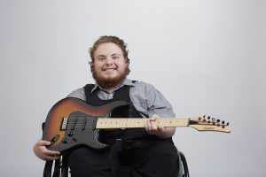
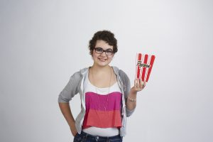
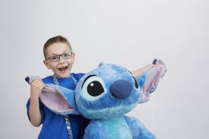

Mustaches for Kids Ottawa
12 Years of Growing Mustaches and Raising Money for Make-a-Wish
The Wishes We Gave!
October 25th, 2017 by Brett Tackaberry
Every year I am blown away by the impact our efforts have on the families we help. Here are a few stories of the wishes we gave.

Robyn’s Wish To Have a Custom made Electric Guitar!
Robyn, 17, is a bright and intelligent young man who suffers from Caudal Regression Syndrome and Central hypoventilation. However Robyn doesn’t let his condition deter him from doing the things he loves most like music and playing guitar. Robyn is very passionate about music and his dream is to be one day a professional musician.
Robyn only had one wish: To have a custom made electric guitar with an amplifier. Robyn’s wish came true at a special Make-A-Wish family event. Robyn was invited on stage to play guitar and was joined by Iron Man to the sound of Black Sabbath, one of his favorite group. Robyn’s wish was revealed and he was presented with a custom made Carvin guitar and amplifier! Robyn performed a couple of songs for everyone to enjoy.

Briana’s Wish To have a London themed Movie Room!
Briana, 13, Aplastic Anemia, I wish to have a…London themed movie theatre room!
When we first met Briana she had been in isolation for several months and still had many to go. She discussed that she absolutely loved watching movies and would love to have a place to call her own to just be able to hangout and forget about everything.
On Wednesday Feb 10th on Briana’s birthday a team came in to make Briana’s wish come true!
Briana spent her 13th birthday at her grandmother having no clue that her basement was being transformed into a London themed theatre room. We had included and projector, screen and had theatre style seats. Not to mention the movie popcorn machine, cotton candy machine and much more!
Once the clock stroke 4:30pm the time had arrive for the big reveal. As soon as she came down the stairs and opened the door she was speechless. Something mom and dad do not see often. She stood there observing everything wondering how this all happened. After about 15 minutes Briana was her old self again walking around the room noticing every little detail and commenting on everything she saw in the room. She could not believe her eyes. “This is much more than I could have ever imagined!” said Briana. Absolutely amazing!!
“Briana had a friend over the following weekend after the reveal… She really enjoyed it!!! We have also enjoyed it as a family. We pretty much have pizza and a movie followed by popcorn every Friday. We can’t thank you enough for all your hard work in fulfilling Briana’s wish. We hope you know just how much we appreciate the time you have taken for our Briana to make her happy and feel extremely special.” Briana’s mom

Lincoln’s Wish To go to Disney World!
Lincoln, 6, Leukemia, I wish to go to Disney World!
In January Lincoln received a bone marrow transfusion from his sister. Shortly after that he caught a virus and had to spend another 6 weeks in the hospital in Montreal, away from his family. As you can imagine it has been a difficult time for Lincoln.
Once his was stable we welcomed Lincoln back home and surprised him with his Wish Reveal. We held the party outside to help protect Lincoln from exposure to viruses. His school mates, neighbours and friends came out to celebrate with him.
When Lincoln came outside he looked at everyone and then looked up at his parents and said, “This is awesome, I LOVE being home!” with a huge smile.
On August 21st a big stretched limo came to pick him up to bring Lincoln and his family to the airport. Upon his arrival at the airport the WestJet representative came to greet them and helped them to their flight. Aboard the airplane Lincoln got to go visit the cockpit and pretend to be a pilot. He absolutely loved this part!
“Lincoln had an amazing time. He loved everything about the trip the village the rides the people and the fast pass (no lines) he especially loved all you can eat ice cream. The village was amazing and very well ran. I don’t think there is anything that he didn’t like. His facial expressions on some of the rides were priceless. One thing he did mention was he looked forward to leaving the villa because people break in when we weren’t home and placed presents lol! We would love to give back and possibly one day make someone else’s wish come true. Thank you for everything! Lincoln’s family